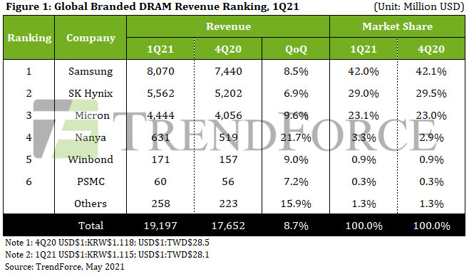
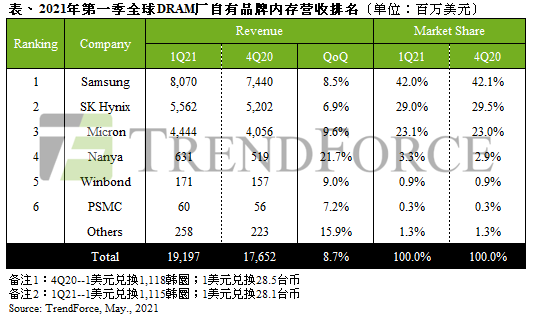
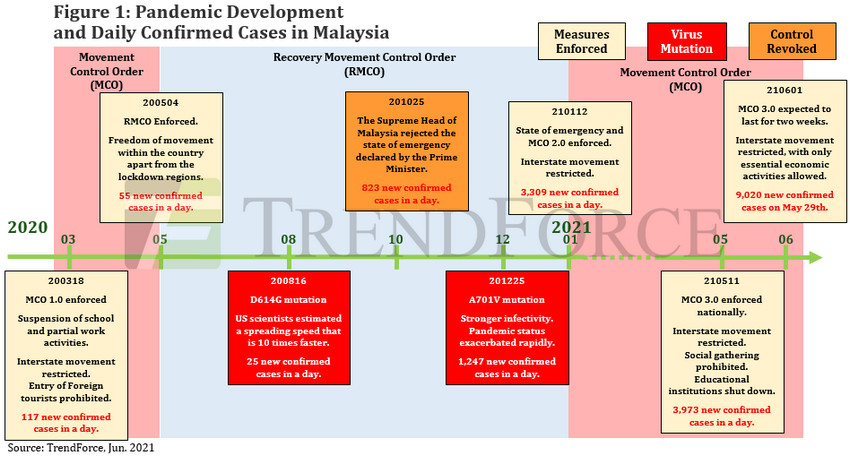
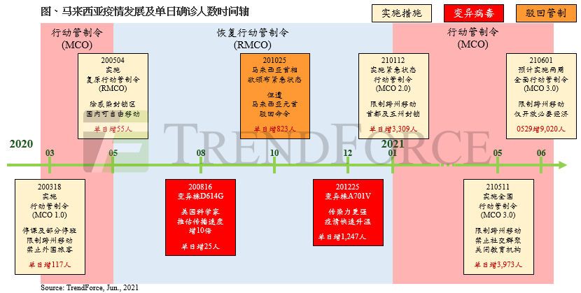
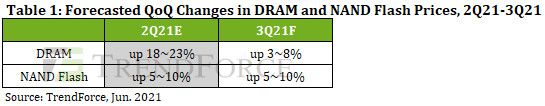
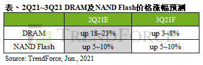
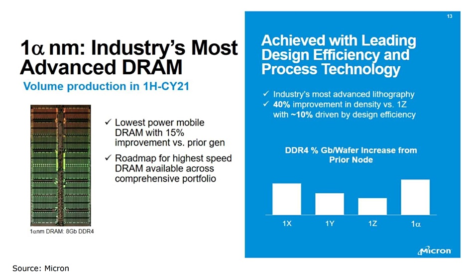
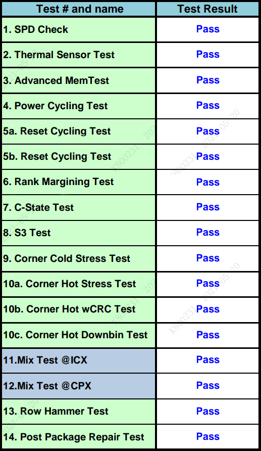
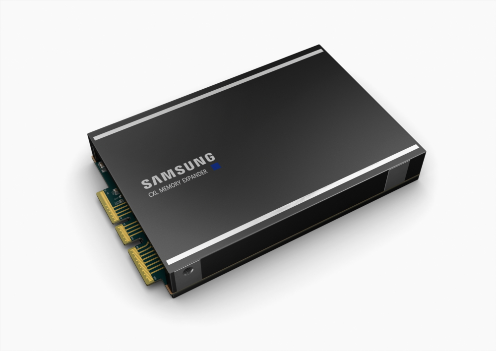

Market Trends
DRAM Revenue for 1Q21 Undergoes 8.7% Increase QoQ Thanks to Increased Shipment as Well as Higher Prices(TrendForce 2021-05-11)
Demand for DRAM exceeded expectations in 1Q21 as the proliferation of WFH and distance education resulted in high demand for notebook computers against market headwinds, according to TrendForce’s latest investigations. ……Taken together, these factors led to higher-than-expected shipments from various DRAM suppliers in 1Q21 despite the frequent shortage of such key components as IC and passive components. On the other hand, DRAM prices also entered an upward trajectory in 1Q21 in accordance with TrendForce’s previous forecasts. In light of the increases in both shipments and quotes, all DRAM suppliers posted revenue growths in 1Q21, and overall DRAM revenue for the quarter reached US$19.2 billion, an 8.7% growth QoQ.
Demand for PC, mobile, graphics, and special DRAM remains healthy in 2Q21. ……Some server manufacturers have now kicked off a new round of procurement as they expect a persistent increase in DRAM prices. TrendForce therefore forecasts a significant QoQ increase in DRAM ASP in 2Q21. In conjunction with increased bit shipment, this price hike will likely drive total DRAM revenue for 2Q21 to increase by more than 20% QoQ.
Rebounding DRAM prices were the primary revenue driver for major suppliers in 1Q21
……
DRAM suppliers will accelerate their capacity expansion plans in 2H21 in light of bullish DRAM demand
………
Taiwanese suppliers are dynamically adjusting their production capacities ahead of price hikes in the bullish specialty DRAM market
……

量价齐扬带动，2021年第一季DRAM产值季增8.7%(集邦咨询 2021-05-11)
2021年第一季DRAM（内存）需求较预期更为强劲，主要包含远距办公与教学带动笔电需求淡季不淡，以及中国智能手机品牌OPPO、vivo、小米（Xiaomi）积极加大零部件采购力道，欲抢食华为（Huawei）的市占缺口。再者，云端服务器业者的备货需求逐步回温，即便各式零部件缺料如各类IC、被动元件等问题频传，仍使第一季各家DRAM供应商的出货表现优于预期。而DRAM价格亦如先前预测于第一季开始正式反转向上，在出货量与报价同步上升的情况下，除了使原厂营收表现皆成长之外，也进一步推升2021年第一季DRAM总产值至192亿美元，季增8.7%。
时序进入第二季，包括PC、mobile、graphics及specialty DRAM在内的各产品需求仍将维持稳健。此外，先前拉货动能较疲软的服务器业者经过2~3季的库存去化，加上预期DRAM价格将持续上扬，部分业者重启新一轮的备货潮。TrendForce集邦咨询预期，第二季原厂DRAM平均销售单价上扬幅度将十分显著，配合出货量持续向上，整体DRAM产值季成长率将有机会突破两成。
第一季DRAM价格反转向上，推升三大原厂营收表现
……
DRAM需求好转，原厂加快下半年产能扩增计划
……
Specialty DRAM市况热络，台厂动态调配产能迎涨价潮
……

MCO 3.0 Lockdown in Malaysia, Hotspot for Packaging/Testing and Passive Component Manufacturing, Projected to Have No Effect on Semiconductor Companies(TrendForce 2021-06-02)
National governments in Southeast Asian countries, including Thailand, Vietnam, and Malaysia, have been instituting increasingly stringent pandemic control measures in response to the intensifying COVID-19 pandemic in these countries. Remarkably, these countries are all hotspots in the electronic component supply chain, and Malaysia, home to many semiconductor packaging and testing facilities as well as passive component fabs, has now come under the international spotlight as a result. In particular, Malaysia’s MCO 3.0 (Movement Control Order 3.0) lockdown, which was extended on June 1, specifically excludes the semiconductor industry, as this industry boasts relatively high market revenue. As such, packaging and testing facilities are currently operating normally in Malaysia, according to TrendForce’s latest investigations.
……

封测及被动元件生产重镇，马来西亚全面行动管制不影响半导体业者(集邦咨询 2021-06-02)
由于近期东南亚如泰国、越南和马来西亚疫情持续严峻，故政府祭出更严密的防疫政策应对，然前述国家皆为电子材料供应链的重镇，其中又以半导体封装测试，以及被动元件供应为重的马来西亚最受关注。马来西亚本月1日起实施的全面行动管制（MCO 3.0），多数产业中仅有具备高产值优势的半导体产业不受限制，根据TrendForce集邦咨询调查，当地封测相关企业或产线目前仍正常运行。
马来西亚政府于2020年3月18日首次执行类似的防疫管制，当时仅允许5成私人企业于防疫条件下可对外营业；至于较高产值的半导体业及紧急救护的医疗业不在此限。而本次虽提升管制力道，仅开放部分必要经济活动，但其限制条件却有所放宽，惟限私人业者4成出勤人口须远距办公；半导体行业则仍排除在外。
……

Memory Prices Likely to Continue Rising in 3Q21 as Suppliers Keep a Low Level of Inventory(TrendForce 2021-06-08)
Memory suppliers are currently carrying a relatively low level of inventory because of aggressive stock-up activities of clients across different application segments in 1H21, according to TrendForce’s latest investigations. More specifically, inventories of DRAM suppliers and NAND Flash suppliers are averaging 3-4 weeks and 4-5 weeks, respectively. The overall procurement of server memory products is expected to intensify in 3Q21, so memory suppliers do not see the necessity in lowering quotes to drive sales. TrendForce forecasts that DRAM prices will rise further by 3-8% QoQ for 3Q21. On the other hand, thanks to the growing demand for enterprise SSDs and NAND Flash wafers, TrendForce has also corrected up the magnitude of the QoQ increase in NAND Flash prices for 3Q21 to 5-10% (compared with the previous projection of 3-8%).
High inventory may pose potential risk for smartphone brands in 2H21 due to decreased smartphone production targets
………
PC OEMs are holding up to 10 weeks’ worth of DRAM inventory on average; price hike of PC DRAM in 2H21 will likely be limited as a result
………

原厂库存低水位，支撑第三季存储器价格续涨(集邦咨询 2021-06-08)
受各终端买方于今年上半年积极备库存的带动，使得存储器原厂库存偏低，DRAM原厂平均库存仅3~4周；NAND Flash供应商平均库存则为4~5周。面对第三季服务器客户欲加强采购力道，原厂针对各类存储器产品报价并无降价求售的必要性，故TrendForce集邦咨询预估，第三季整体DRAM价格将续涨约3~8%；NAND Flash则受enterprise SSD及wafer需求攀升，整体价格季涨幅将由原先的3~8%，上调至5~10%。
生产目标下修，存储器高库存恐成手机品牌厂下半年隐忧
……
PC OEM厂DRAM平均库存最高达10周，将收敛下半年PC DRAM涨幅
……

Vendor News
Samsung Electronics to Disclose DRAM Circuit Width Accurately(businesskorea 2021-05-06)
Samsung Electronics has decided to accurately disclose the circuit width of its DRAM products in a bid to get technology competition started among chipmakers.
Circuit width is considered to be a major measure of a semiconductor company’s technical skills. This is because the narrower a DRAM’s circuit width is, the higher its power efficiency is.……DRAM makers have not specified the circuit width of their DRAMs over the past five to six years. They dubbed the first-generation DRAMs in the 10nm node level, which were launched in 2016, as 1x, 2nd-generation products launched in 2018 as 1y and 3rd-generation products launched in the same year as 1z. In early 2021, fourth-generation 1a came out.
“Samsung Electronics is going to mass-produce 1a DRAM in the second half of 2021,” the company said, specifying the circuit width of the product as 14nm.
……
质疑对手技术进展真实性，三星将公开10纳米级制程DRAM电路线宽(科技新报 2021-05-07)
5月7日消息，由于质疑竞争对手的技术进展，三星决定公开自家DRAM产品的电路线宽，以显示三星在该领域的技术领先地位。据韩媒 BusinessKorea 报导，三星准备打破DRAM业界传统，将公布自家DRAM产品电路线宽。
上述报导指出，DRAM 电路线宽被业界认定为衡量存储器公司技术能力的重要指标，DRAM的电路线宽越窄，其功率效率就越高。 因此，过去DRAM业界的传统就是不明确公开相关产品的确切电路线宽。
……
报导强调，三星不仅怀疑美光夸大其1a纳米制程DRAM的效能，而且，由于至今未看到美光发表相关产品的照片，也质疑其1a纳米制程DRAM是否已真的可进行大规模量产。 因此，三星决定明确公布其下各代10纳米级制程DRAM的电路线宽数字。
Micron Ships First DRAM Manufactured on Its 1 Alpha Node(ExtremeTech 2021-06-03)
Micron has announced unit shipments for its first DRAM manufactured on the 1α (1 alpha) node. This new memory, which the company is building before it has deployed EUV for manufacturing, will offer a larger improvement in bit density and a modest decrease in power consumption.
Initially, 1α will be used for manufacturing DDR4 and LPDDR4. Over time, Micron expects to expand the use of the node to other products. The company is claiming a bit density improvement of 40 percent over products built using the 1z manufacturing node. Power consumption is said to have improved by “up to” 20 percent.
……What’s impressive is that Micron is moving to manufacture these new chips without the use of EUV.……Samsung uses EUV for its own 1Z manufacturing, but it dedicates less of its own production in percentage terms to 1Z than Micron does (6 percent versus 15 percent).

金泰克DDR4服务器内存获美国AVL实验室认证(全球半导体观察 2021-05-21)
金泰克旗下KTQGR4AEE DDR4服务器专用内存获得美国先进认证实验室（Advanced Validation Labs，AVL）颁发的独立认证，验证该款产品适配并兼容Intel CPU及主板【Intel® 3rd Gen Intel® Xeon Scalable Processors Ice Lake-SP (ICX-SP) and Cooper Lake (CPX-SP)】。AVL是测试、认证内存产品的第三方专业机构，它与各大厂商建立联合机制，主要为全球主要代工厂和主板制造厂商提供测试与认证相关的技术性服务，被视为内存测试的权威机构。

New Technology
Samsung Unveils Industry-First Memory Module Incorporating New CXL Interconnect Standard(Samsung 2021-05-11)
Samsung Electronics, the world leader in advanced memory technology, today unveiled the industry’s first memory module supporting the new Compute Express Link (CXL) interconnect standard. Integrated with Samsung’s Double Data Rate 5 (DDR5) technology, this CXL-based module will enable server systems to significantly scale memory capacity and bandwidth, accelerating artificial intelligence (AI) and high-performance computing (HPC) workloads in data centers.
……
CXL—an open, industry-supported interconnect based on the PCI Express (PCIe) 5.0 interface—enables high-speed, low latency communication between the host processor and devices such as accelerators, memory buffers and smart I/O devices, while expanding memory capacity and bandwidth well beyond what is possible today. Samsung has been collaborating with several data center, server and chipset manufacturers to develop next-generation interface technology since the CXL consortium was formed in 2019.
……
“This is the industry’s first DRAM-based memory solution that runs on the CXL interface, which will play a critical role in serving data-intensive applications including AI and machine learning in data centers as well as cloud environments,” said Cheolmin Park, vice president of the Memory Product Planning Team at Samsung Electronics. “Samsung will continue to raise the bar with memory interface innovation and capacity scaling to help our customers, and the industry at-large, better manage the demands of larger, more complex, real-time workloads that are key to AI and the data centers of tomorrow.”
……
